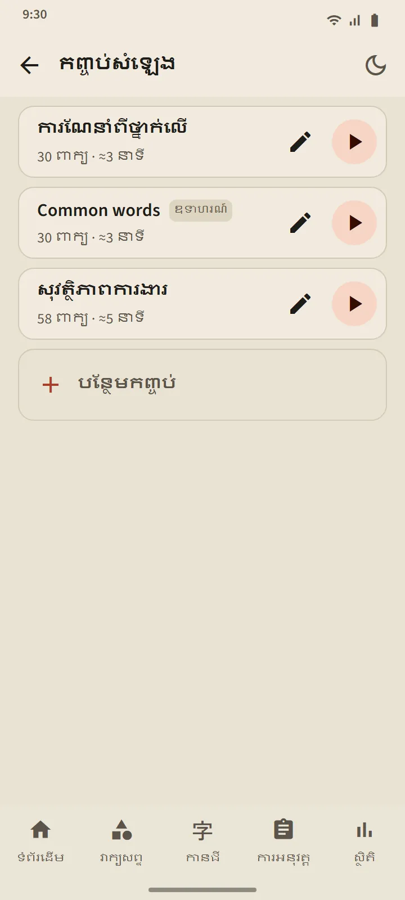
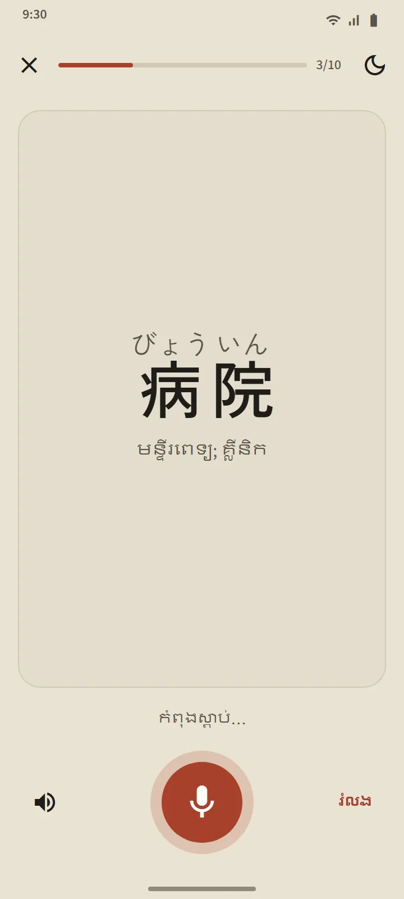
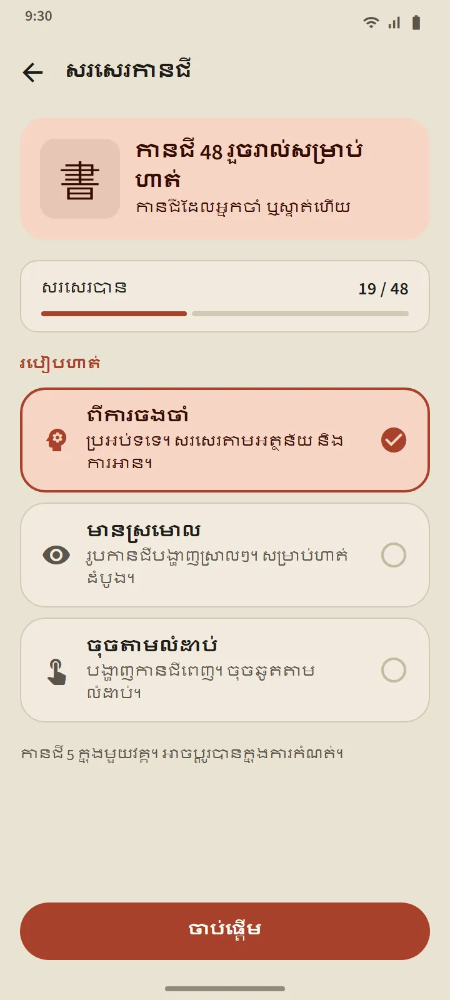
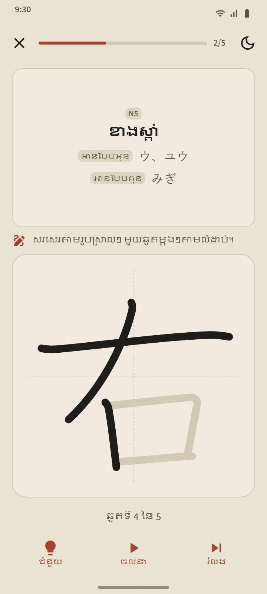

កញ្ចប់សំឡេងដែលអ្នកបង្កើតដោយខ្លួនឯង
បង្កើតកញ្ចប់ដែលមាន 5 ទៅ 100 ពាក្យ៖ ស្វែងរកម្ដងមួយពាក្យ ឬយកច្រើនពាក្យក្នុងពេលតែមួយពីកញ្ចប់វាក្យសព្ទណាមួយ។ កម្មវិធីចាក់អានពាក្យនីមួយៗជាភាសាជប៉ុន បន្ទាប់មកអានអត្ថន័យជាភាសារបស់កម្មវិធី (បិទកុងតាក់ «អានអត្ថន័យឮៗ» ដើម្បីស្តាប់តែភាសាជប៉ុន)។ ពាក្យបច្ចុប្បន្នបង្ហាញជាអក្សរធំជាមួយហ្វុរីហ្កាណា ហើយអ្នកអាចចុចលើពាក្យក្នុងបញ្ជីដើម្បីលោតទៅពាក្យនោះ។
ការបញ្ជា៖ ចាក់ដោយចៃដន្យ ចាក់ឡើងវិញ និងល្បឿន 0.75×, 1× ឬ 1.25×។ កម្មវិធីចាក់នៅតែបន្ត ពេលអេក្រង់បិទ ឬពេលអ្នកប្ដូរទៅកម្មវិធីផ្សេង ហើយការជូនដំណឹងរបស់កម្មវិធីចាក់ និងប៊ូតុងលើកាសស្តាប់ត្រចៀកនៅតែបញ្ជាវាបាន។
- កំណែឥតគិតថ្លៃ៖ 3 កញ្ចប់។ Premium៖ គ្មានដែនកំណត់ ហើយកញ្ចប់មួយអាចទាញយកជាឯកសារសំឡេងតែមួយ (M4A)។
- កញ្ចប់គំរូ «Common words» ត្រូវបានបង្កើតដោយស្វ័យប្រវត្តិពីពាក្យដែលប្រើញឹកញាប់បំផុត ហើយអ្នកអាចកែ ឬលុបវាបានតាមចិត្ត។
- ការស្តាប់មិនដែលប្ដូរកាលវិភាគ ឬដំណាក់កាលរបស់ពាក្យឡើយ។

ហាត់និយាយ៖ និយាយ រួចបន្តទៅមុខ
ពាក្យដែលអ្នកចាំបានហើយ ឬស្ទាត់ជំនាញ លេចឡើងលើកាត មីក្រូហ្វូនបើកដោយខ្លួនឯង អ្នកនិយាយពាក្យនោះ ហើយបើទូរស័ព្ទរបស់អ្នកស្គាល់វា ពាក្យបន្ទាប់នឹងលេចឡើង។ បើមិនស្គាល់ទេ អេក្រង់បង្ហាញអ្វីដែលវាបានឮ រួចស្តាប់ម្ដងទៀត ហើយក្រោយពីសាកបីដង វាចាក់សំឡេងគំរូ។ ប៊ូតុងមីក្រូហ្វូន ប៊ូតុងសំឡេងគំរូ និង «រំលង» មានជានិច្ច។ វគ្គមួយមាន 5, 10, 15 ឬ 20 ពាក្យ។
សំឡេងរបស់អ្នកត្រូវបានដំណើរការដោយសេវាសម្គាល់សំឡេងនិយាយរបស់ទូរស័ព្ទអ្នក (ជាធម្មតារបស់ Google) ហើយកម្មវិធីមិនថត ឬរក្សាទុកវាទេ។ មានតែពាក្យប៉ុណ្ណោះដែលត្រូវបានវាយតម្លៃ មិនមែនសំនៀងនិយាយរបស់អ្នកទេ។ ដោយសារការសម្គាល់សំឡេងនិយាយអាចស្តាប់ខុស ការហាត់នេះមិនដែលបន្ថយដំណាក់កាលរបស់ពាក្យឡើយ។

សរសេរកានជី៖ មួយឆូតម្ដងៗ
សម្រាប់កានជីដែលអ្នកចាំបានហើយ ឬស្ទាត់ជំនាញ។ មានតែអត្ថន័យ និងការអានប៉ុណ្ណោះដែលបង្ហាញ អ្នកសរសេរក្នុងប្រអប់ដែលមានទទឹងពេញអេក្រង់ ហើយឆូតនីមួយៗត្រូវបានពិនិត្យពេលអ្នកលើកម្រាមដៃ៖ រូបរាង ទិសដៅ និងលំដាប់។ ឆូតដែលត្រូវ នឹងត្រូវបានតម្រឹមទៅជារូបរាងស្តង់ដារ ចំណែកលំដាប់ខុស ឬទិសដៅបញ្ច្រាស ត្រូវបានបដិសេធដោយប្រយោគមួយ ហើយក្រោយពីខុសពីរដង ឆូតបន្ទាប់នឹងលេចឡើងស្រាលៗជាមួយចំណុចចាប់ផ្ដើមរបស់វា។
- ពីការចងចាំ៖ ប្រអប់ទទេ។ មានស្រមោល៖ កានជីបង្ហាញស្រាលៗ សម្រាប់ហាត់ដំបូង។ ចុចតាមលំដាប់៖ កានជីបង្ហាញពេញ ហើយអ្នកចុចឆូតរបស់វាតាមលំដាប់។
- ប៊ូតុង ចលនា ចាក់បង្ហាញការសរសេរកានជីទាំងមូល នៅពេលណាក៏បាន។
- កានជីមួយរាប់ថា សរសេរបាន បន្ទាប់ពីអ្នកសរសេរវាពីការចងចាំដោយគ្មានជំនួយ នៅពីរថ្ងៃផ្សេងគ្នា ហើយវគ្គមួយមានកានជី 5, 10 ឬ 15 តួ។


ការបញ្ចេញសំឡេងនៅគ្រប់ទីកន្លែង
កាតវាក្យសព្ទ កាតកានជី ព័ត៌មានលម្អិតពាក្យ មេរៀនកាណា ឧទាហរណ៍វេយ្យាករណ៍ និងសំណួរស្តាប់ សុទ្ធតែត្រូវបានអានដោយម៉ាស៊ីនបំប្លែងអក្សរទៅជាសំឡេងភាសាជប៉ុនក្នុងទូរស័ព្ទរបស់អ្នក ដូច្នេះមិនចាំបាច់ទាញយកឯកសារសំឡេងទេ។ គុណភាពសំឡេងអាស្រ័យលើម៉ាស៊ីនរបស់ទូរស័ព្ទនីមួយៗ។